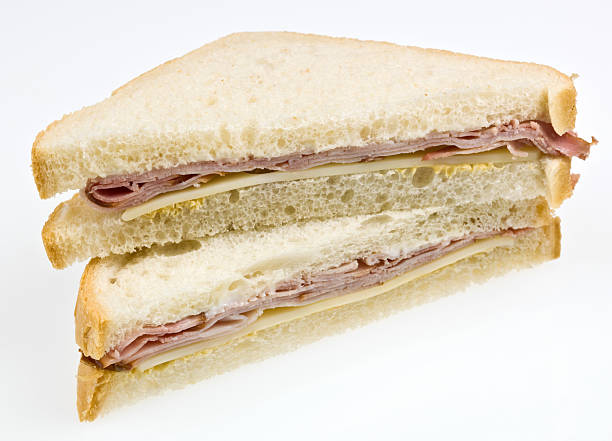

Ham and Cheese Sandwich

A delicious sandwich doesn't need fancy condiments (more specifically fancy ketchup) or any type of plant matter to be delicious. In the case of
my patented Ham and Cheese Sandwich recipe, less is more.
Ingredients
Recipe
- Take out two slices of white bread and place them on a plate or napkin or whatever
- Apply two slices of moderately thick ham to the bread (feel free to use more if you prefer
- Apply a slice of cheese on top of the ham (again, use more if you so desire)
- Put the slice of bread that doesn't have Ham and Cheese on top of it on top of the one that does
- Do not use any condiments or vegetables